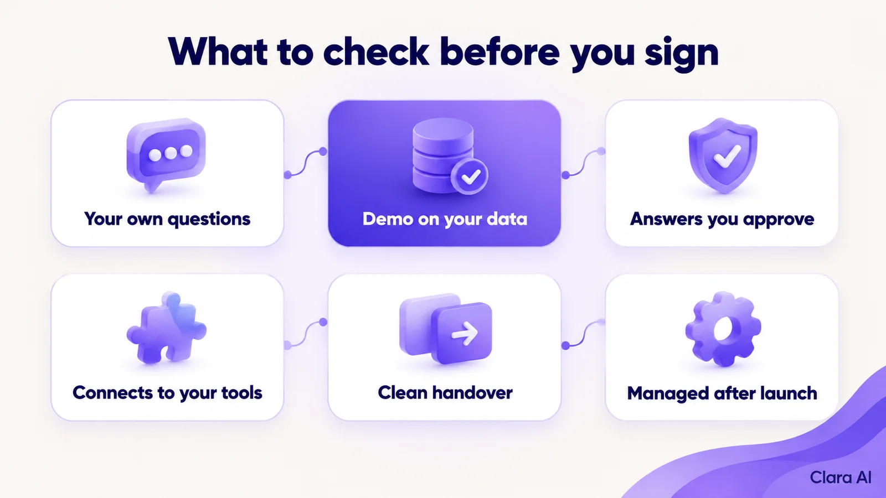
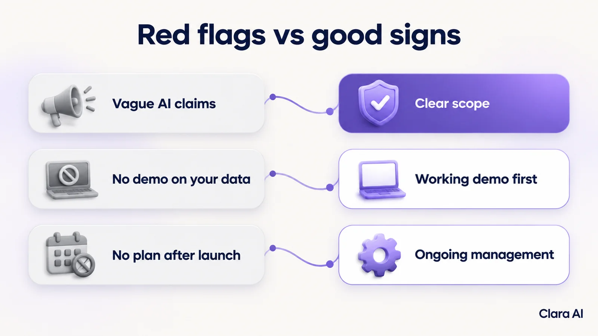

Choose an AI chatbot development company that builds from your own questions and documents, shows a working demo on your material before you sign, answers only from approved knowledge, hands over to a person with full context and manages the bot after launch. Use the ten checks below to compare vendors.
The owner of a mid-size distribution business has three proposals on her desk. All three promise "AI". One is a low-cost template bot. A friend bought one last year, and it still answers questions about a product line that was discontinued. The second vendor's demo looked impressive, but it ran on sample content. When she typed a real customer question, it gave a vague answer. The third proposal is the longest, and she cannot tell what she would actually receive.
This checklist is for owners and operations heads at established US and Canadian businesses with no in-house tech team. It is written to help you ask better questions, whichever vendor you pick.
A good build starts with what your customers actually ask. That means past emails, chat logs, call notes, your product sheets and your policies. A template bot starts from a generic script and asks you to fit your business into it.
Ask the vendor how they will find your top customer questions. A sound answer includes a review of your own inquiries and documents before any design work begins.
Do not sign on the strength of a demo built on someone else's content. Ask for a working version on yours, using your real documents and your real questions, before you commit.
Clara AI delivers a first demo within 7 days of receiving your material. Whoever you choose, ask for a date. If a vendor cannot show anything on your content until after contract, treat that as information.
A chatbot that guesses is worse than no chatbot. Ask how the bot is limited to your approved content. It should be able to open the source behind an answer, and it should say "I don't know" when your documents do not cover a question. Then it should offer a person.
Test this yourself during the demo. Ask something your documents do not cover and watch what it does.
Answering questions is half the job. The other half is action. A useful chatbot can capture a lead, book a slot, check an order status or open a ticket, and it writes each result to the system your team already uses.
Ask which systems the vendor has connected before and what is possible with yours. Where a direct connection is not possible, ask what the workable alternative is.
The handover decides how customers feel about the whole bot. Ask these questions:
A good handover means nobody repeats themselves.
This is where most template bots fail. Products change, prices change and policies change. A bot nobody updates slowly goes wrong.
Ask who monitors the chats, who fixes wrong answers, who updates the knowledge when your business changes and how often. Ask what you receive at the end of each month. "You can log in and edit it yourself" is not a management plan for a team with no technical staff.

Every conversation is data about your customers. Ask whether chats are summarised and whether you can see the top questions, the questions the bot could not answer and the number of handovers.
An operations intelligence dashboard can turn those summaries into one view, so you fix the gaps in your website, pricing or policies and not only in the bot.
Chats can hold personal information. US state privacy laws may apply to your business, and for health businesses HIPAA may apply as well. Clara AI builds within the client's own rules. This is not legal advice, so confirm your obligations with your legal adviser, and ask every vendor how they handle consent, access and retention.
Ask for the languages your customers actually use and ask to see each one tested. Clara AI's chatbots and calling agents work in English and Hindi. Ask any vendor, including us, to prove every language you need on your own content before you rely on it.
Get this in writing:
Vague scope leads to disputes later. If your data cannot leave with you, you are renting access, not owning an asset.

Take this list into each call.
For most US and Canadian businesses, start with the website. An AI web chatbot helps visitors who already have a question, and it needs only a browser. Add WhatsApp where your customers already use it, for example for repeat buyers or customers abroad. Our guide to web chatbot vs WhatsApp chatbot explains how to choose between the two.
If your questions depend on a large product range, read our guide to an AI web chatbot for industrial product catalogue support. If you need something more specific, such as sorting support emails, a custom AI agent may fit better.
Clara AI has built a web chatbot for Tempsens, an industrial manufacturer, that answers product catalogue questions. For Apex Hospitals, a healthcare group, it has built a WhatsApp chatbot for patient queries and appointment help. These clients are in India, and Clara AI works with companies in North America. We publish no results here, so we make no claims, and your own build depends on your content and systems. See our client work.
Clara AI builds, deploys and manages chatbots in six steps.